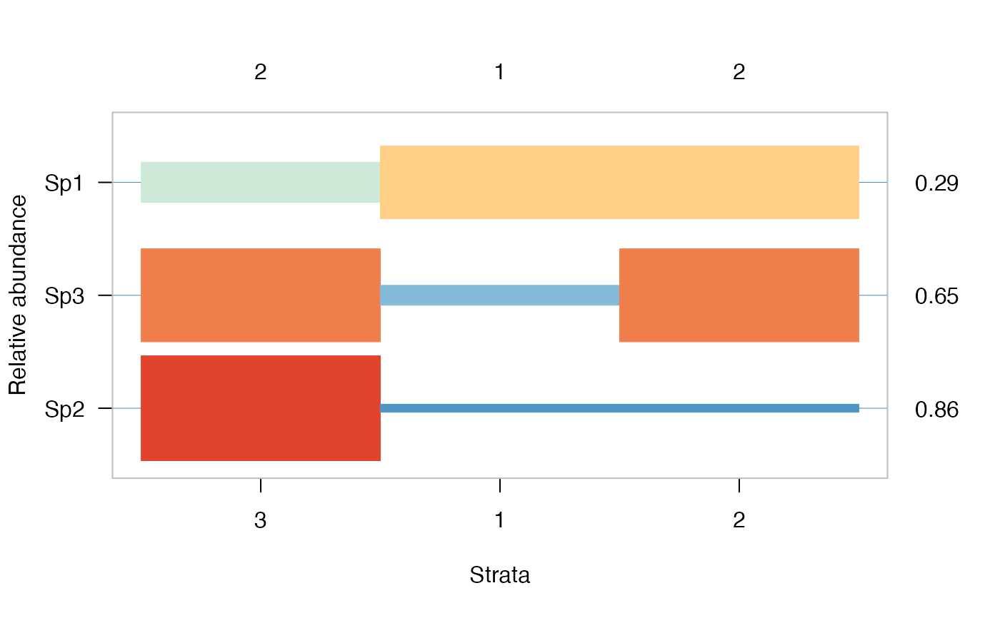

Likelihood Based Optimal Partitioning and Indicator Species Analysis
opticut-package.RdLikelihood based optimal partitioning and indicator species analysis. Finding the best binary partition for each species based on model selection, with the possibility to take into account modifying/confounding variables as described in Kemencei et al. (2014) <doi:10.1556/ComEc.15.2014.2.6>. The package implements binary and multi-level response models, various measures of uncertainty, Lorenz-curve based thresholding, with native support for parallel computations.
Details
The DESCRIPTION file:
This package was not yet installed at build time.
Index: This package was not yet installed at build time.
The main user interface are the opticut
and multicut functions
to find the optimal binary or multi-level response models.
Make sure to evaluate uncertainty.
optilevels finds the optimal number of factor levels.
Author
Peter Solymos [cre, aut] (<https://orcid.org/0000-0001-7337-1740>), Ermias T. Azeria [ctb]
Maintainer: Peter Solymos <psolymos@gmail.com>
References
Kemencei, Z., Farkas, R., Pall-Gergely, B., Vilisics, F., Nagy, A., Hornung, E. & Solymos, P., 2014. Microhabitat associations of land snails in forested dolinas: implications for coarse filter conservation. Community Ecology 15:180--186. <doi:10.1556/ComEc.15.2014.2.6>
Examples
## community data
y <- cbind(
Sp1=c(4,6,3,5, 5,6,3,4, 4,1,3,2),
Sp2=c(0,0,0,0, 1,0,0,1, 4,2,3,4),
Sp3=c(0,0,3,0, 2,3,0,5, 5,6,3,4))
## stratification
g <- c(1,1,1,1, 2,2,2,2, 3,3,3,3)
## find optimal partitions for each species
oc <- opticut(formula = y ~ 1, strata = g, dist = "poisson")
summary(oc)
#> Multivariate opticut results, comb = rank, dist = poisson
#>
#> Call:
#> opticut.formula(formula = y ~ 1, strata = g, dist = "poisson")
#>
#> Best supported models with logLR >= 2:
#> split assoc I mu0 mu1 logLR w
#> Sp3 2+3 ++ 0.6471 0.75 3.50 4.793 0.6962
#> Sp2 3 +++ 0.8571 0.25 3.25 9.203 0.9577
#> 2 binary splits
#> 1 species not shown
#>
## visualize the results
plot(oc, cut = -Inf)

## quantify uncertainty
uc <- uncertainty(oc, type = "asymp", B = 999)
summary(uc)
#> Multivariate multicut uncertainty results
#> type = asymp, B = 999, level = 0.95
#>
#> split R I Lower Upper
#> Sp1 1+2 1 0.2839 0.01915 0.5529
#> Sp3 2+3 1 0.6136 0.22377 0.8693
#> Sp2 3 1 0.8270 0.50338 0.9663
## go beyond binary partitions
mc <- multicut(formula = y ~ 1, strata = g, dist = "poisson")
summary(mc)
#> Multivariate multticut results, dist = poisson
#>
#> Call:
#> multicut.formula(formula = y ~ 1, strata = g, dist = "poisson")
#>
#> Species models with logLR >= 2:
#> split assoc I logLR
#> Sp2 3 +++ 1.0000 10.589
#> Sp3 3 ++ 0.7143 5.952
#> 1 species not shown
#>
ol <- optilevels(y[,"Sp2"], as.factor(g))
ol[c("delta", "coef", "rank", "levels")]
#> $delta
#> [1] 0.0000000 -0.4980423 NA
#>
#> $coef
#> 1 2 3
#> [1,] 0.00 0.50 3.25
#> [2,] 0.25 0.25 3.25
#> [3,] NA NA NA
#>
#> $rank
#> 1 2 3
#> [1,] 1 2 3
#> [2,] 1 1 2
#> [3,] NA NA NA
#>
#> $levels
#> $levels[[1]]
#> 1 2 3
#> "1" "2" "3"
#>
#> $levels[[2]]
#> 1 2 3
#> "1+2" "1+2" "3"
#>
#>